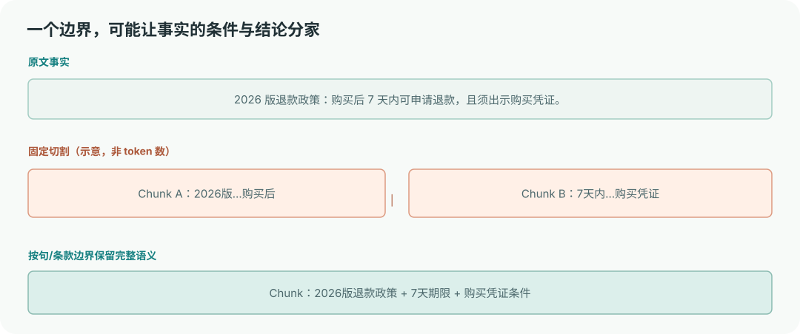
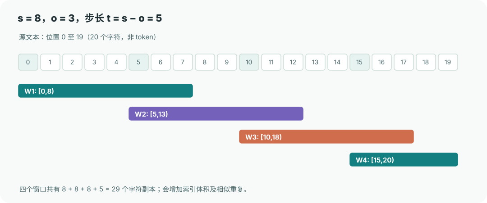
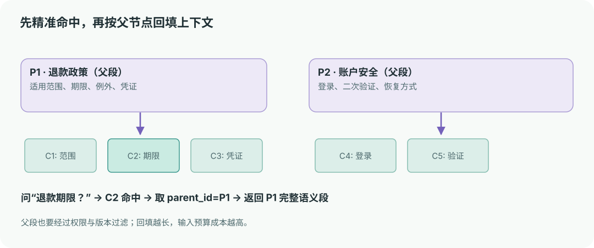
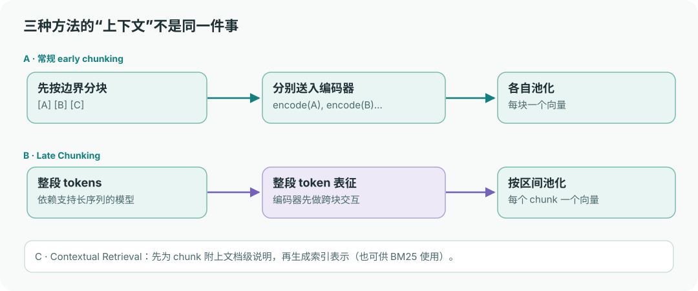

BOUNDARIES → UNITS → CONTEXT
文本分块：
边界、重叠与语义完整性
为什么一句话会被切成两个无法独立作答的片段？从滑动窗口的精确数学到结构感知、父子层级和 Late Chunking，用可复现的小实验建立分块设计的判断标准。
MECHANISM / PROBLEM
一句话为什么会在边界处失去答案？
一份退款政策写着：“2026 版订单在付款后 7 天内可以申请退款，但需保留购买凭证。”如果检索块在“付款后”与“7 天内”之间被截断，查询“2026 版退款期多长？”时，相关信息可能落在两个不同的 chunk。检索器若只返回其中一个，生成器就看不到完整条件与结论。
分块（Chunking）并不是排版任务，而是在为检索设计可检索单位：块太短，条件和答案分离；块太长，查询与证据的局部匹配被无关主题稀释，还会增加后续上下文预算。

MECHANISM / UNITS
字符、token 和结构块必须分开
很多分块代码写着 chunk_size=512，却未定义 512 是字符、Python 的 Unicode code point、UTF-8 字节还是模型 token。它们彼此不等价。Python 的 len(text) 对一般字符串计数为 Unicode 代码点，并不是模型 tokenizer 输出的 token 数。
| 分块计量单位 | 适合做什么 | 为什么不能替代其它单位 |
|---|---|---|
| 字符 / 代码点 | 无依赖的原型、浏览器文本编辑 | 中文、英文、emoji 和分词器 token 没有固定换算 |
| 模型 token | 保证 embedding 上限和生成 prompt 预算 | 需要指定模型版本和 tokenizer；同一文本跨模型可能变化 |
| 句子 / 段落 / 标题 | 保留标点、条款与章节含义 | 单个结构块可能超出模型输入长度 |
| 页面 / 表格 / AST 节点 | 保持结构和来源定位 | 一整页或一整个表不一定适合作为检索粒度 |
工程上先从源文档建立结构块，然后根据选择的嵌入模型 tokenizer 施加二次 token 预算。对长表格、长代码块或超长条款，需要定义“如何拆、如何保留父节点”的规则，而不能让下游模型自行猜测缺失结构。
MECHANISM / OVERLAP
重叠窗口的精确数量与代价
固定窗口设长度为 s、相邻窗口重叠为 o，则步长 t=s−o。要让循环前进，必须满足 s > 0 与 0 ≤ o < s；否则重叠等于窗口长度会使下标不能前进。
长度 L 的序列在不填充、最后一块允许变短的实现中，当 L＞s 时窗口数为：
补全边界：L=0 时 N=0；0＜L≤s 时 N=1。以字符为单位，假设 L=20、s=8、o=3，窗口分别覆盖 [0,8)、[5,13)、[10,18)、[15,20)，总计存储 8+8+8+5=29 个字符副本，而原始序列只有 20 个。

重叠能增加跨边界信息共同出现的机会，却无法保证一个长于窗口的完整表格、推理链或条款进入单个块。它还引入重复存储、相似结果堆积、额外去重与 token 成本。重叠比例应作为超参数在相同评测集上验证，不能写成通用必胜值。
MECHANISM / STRUCTURE
从分隔符到标题、表格与父子层级
一个工程上稳妥的基线是优先尊重文档结构：标题、段落、列表、表格行、代码 AST 节点；当结构单元过大，再使用窗口控制最大长度。对于多层级文档，可区分用于检索的子块与用于提供生成上下文的父块。

父子层级不是自动“更准”。父段过大会把无关信息带入提示词；如果一个子块在分词前失去 parent_id 或来源偏移，就无法安全回链。还可以采用“检索命题、返回其源段落”的模式：命题用于高精度召回，原段落负责提供上下文与准确引用。
RAPTOR 一类研究会向上构造树状摘要，以支持需要跨多段落综合的任务。这里的标题父子法仅是简化的确定性基线，不应与包含学习型摘要或聚类的 RAPTOR 系统混淆。
MECHANISM / SEMANTIC
语义块、命题块、Agentic 的适用边界
所谓语义分块，不是一种固定算法。它可以基于标题和标点规则，也可以计算相邻句子 embedding 的距离，并将检测到的主题变化作为候选边界。后者必须说明嵌入模型、相似度阈值、窗口大小、如何处理长句，以及计算成本。
| 方法 | 核心单位 | 可能优势 | 主要风险 / 需要验证 |
|---|---|---|---|
| 固定窗口 | 固定字符或 token 数 | 最可复现，基线成本低 | 跨句截断、重复与噪声 |
| 结构感知 | 标题、段落、表格和 AST 节点 | 来源边界清晰，便于引用 | 结构解析失败或节点超长 |
| 语义边界 | 相邻片段相似度变化 | 适应主题变化 | 阈值依赖表示模型，未必适合代码和表格 |
| 命题（proposition） | 独立可验证的事实句 | 降低检索单元噪声 | 指代消解错误、抽取成本、脱离上下文 |
| 层级子块→父段 | 索引用短块、返回长块 | 兼顾定位与证据完整性 | 回填预算、父节点一致性、权限 |
| Agentic 切分 | 由模型判断分段 | 可能处理复杂规则 | 成本、不可重复、输出语义失真 |
在 Dense X Retrieval 论文中，proposition 是明确研究过的检索单位，但单个实验结论不能外推为“所有中文法规都应该先抽命题”。应当构建本领域带出处的 gold evidence 测试，比较每种策略的定位和回答充分性。
MECHANISM / CONTEXT
Contextual Retrieval 与 Late Chunking 不同
两者都试图减少 chunk 脱离上下文后的语义损失，但它们作用于完全不同的计算阶段。

Contextual Retrieval
给每个 chunk 添加一段与整份文档相关的说明，再把说明与原块共同用于 embedding 和/或 BM25。关键在于生成的说明必须忠实于原始文档，不能添加不存在的事实。
Late Chunking
用支持较长上下文的编码器一次计算整段 token 的上下文化表征，然后在池化前按照原定 chunk 边界分组。不是“先得到一个整个文档的固定向量，再把向量切片”。
Anthropic 的 Contextual Retrieval 文章报告了特定数据集和配置上的检索失败率变化，但这种结果不是普遍保证。Late Chunking 论文同样有模型长度与性能条件；两者是否值得付费计算，应由同一套离线查询集与工程开销共同判定。
MECHANISM / EXPERIMENT
用纯 Python 重现实验与边界检查
仓库提供可运行的 examples/chunking_lab.py：包含严格校验的字符窗口、标题分块和保留来源偏移的父子块。它不下载模型，也不使用任何随机采样，所以输出可以单元测试。
from examples.chunking_lab import (
fixed_windows, expected_windows, section_spans,
parent_child_records, EXAMPLE
)
fixed = fixed_windows(EXAMPLE, size=16, overlap=4)
assert len(fixed) == expected_windows(len(EXAMPLE), 16, 4)
parents, children = parent_child_records(EXAMPLE, child_size=16, overlap=4)
assert "".join(p["text"] for p in parents) == EXAMPLE
assert all(EXAMPLE[c["start"]:c["end"]] == c["text"] for c in children)
print("父块数:", len(parents), "子块数:", len(children))运行：python3 -m examples.chunking_lab。该程序明确按 Python 字符代码点处理，并不调用模型 tokenizer，不包含 embedding 质量评估。如果换成 token 单位，应保持一致的编码/解码、offset 映射与预算检查。
MECHANISM / EVALUATION
比较分块策略的正确方法
不要只看“平均 chunk 大小”“向量库总条数”或者生成模型的一次回答是否流畅。构造一个固定的、经人工复核的查询-证据映射，再按同一检索器、相同预算与相同权限过滤比较。
| 层面 | 指标与对照变量 | 必须避免的误解 |
|---|---|---|
| 检索覆盖 | Recall@k、Hit@k、nDCG；固定查询和候选预算 | 不同切块改变了相关单元的定义，需明确 gold 映射 |
| 上下文完整性 | 答案条件、否定句、条款版本是否同在返回上下文 | 命中关键词不等于含有可答证据 |
| 成本 | 索引块数、重复字符或 token、构建时间、存储 | 重叠带来的重复不能忽略 |
| 健壮性 | 长表格、代码、无标题 PDF、空文档 | 评测不能只挑易于规则分割的文本 |
| 安全与出处 | 撤权可见性、源偏移准确、跨租户过滤 | 大父块回填不能越权 |
如果改用较小的 chunk，gold evidence 也需要记录“跨多个 chunk 共同提供一个答案”的情况；否则会把细粒度索引天然误判为低召回。建议增加“答案证据集合是否完整落入最终上下文”这一任务级判断，而不是只统计单块关键词。
MECHANISM / SUMMARY
分块并非越聪明越好
分块是检索粒度、语义完整性和下游成本之间的选择。最稳妥的起点通常是：先解析结构，再设一个可复现的窗口基线；对关键任务试验标题感知与父子块；只有在证据缺口已被定位之后，再引入语义边界、上下文化说明或 Late Chunking。
下一层问题是：切好的片段如何被映射到向量空间？相似度分数何时可靠？这属于 embedding 的表示学习与评测问题，不能仅靠“向量距离越近语义越相似”一句话概括。
来源与延伸阅读
- Microsoft Learn — Chunk Documents — 固定大小、重叠与文档切分工程问题
- Anthropic — Introducing Contextual Retrieval (2024) — 为 chunk 添加针对原文的上下文说明再建索引；其效果来自特定评测
- Günther et al., Late Chunking (2024) — 整段 token 表征后按 chunk 边界池化
- Chen et al., Dense X Retrieval (EMNLP 2024) — 以 proposition 为索引粒度的检索研究
- Sarthi et al., RAPTOR (ICLR 2024) — 组织分层摘要和检索树的研究